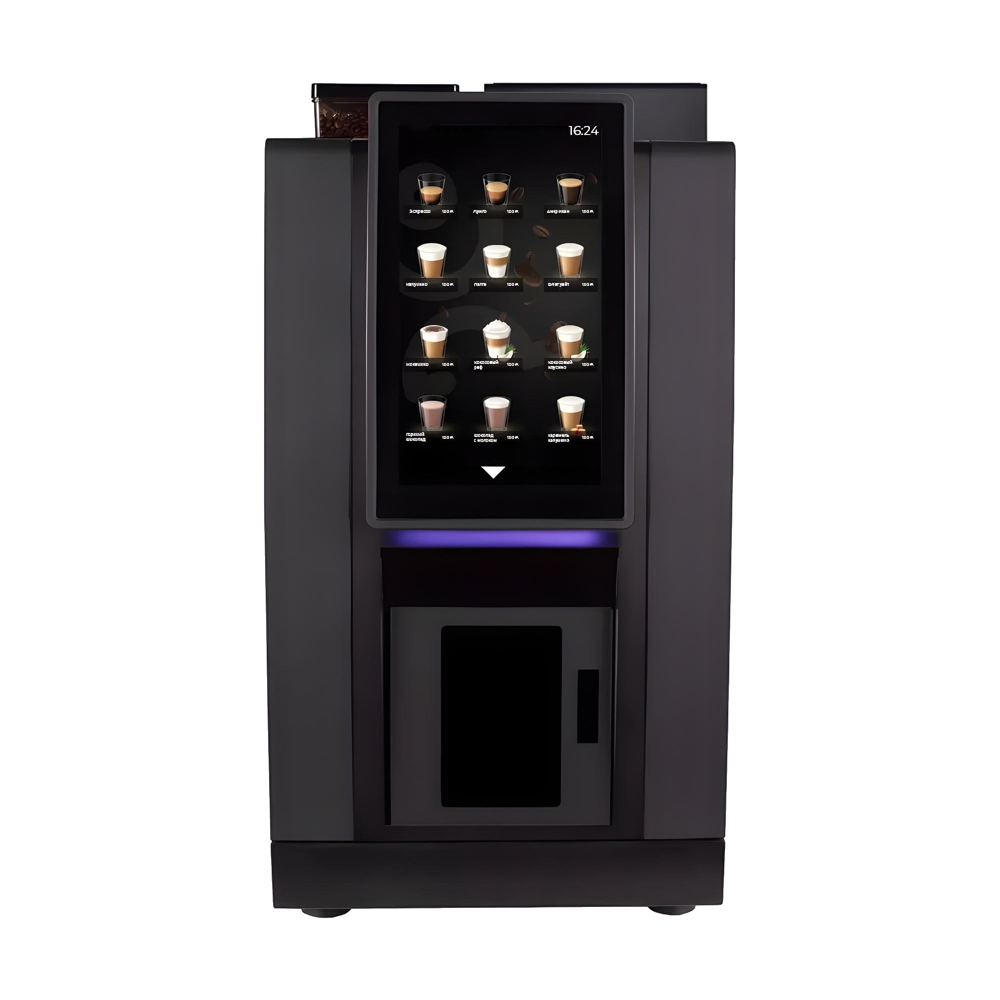

Професійна кавомашина для локацій із середнім та високим трафіком. Підходить для офісів, бізнес-центрів, магазинів, АЗС та навчальних закладів.
Перед першим запуском перевірте електроживлення, підключення до Wi-Fi, воду, каву та інгредієнти. Після цього виконайте калібрування, налаштуйте рецептури, ціни та протестуйте видачу напоїв.
Регулярно очищуйте робочі вузли, контролюйте рівень води, інгредієнтів та стан контейнерів відходів. Для технічного обслуговування використовуйте відеоінструкції вище.
Якщо виникли труднощі з налаштуванням або обслуговуванням обладнання — зверніться до сервісного відділу EasyVending.